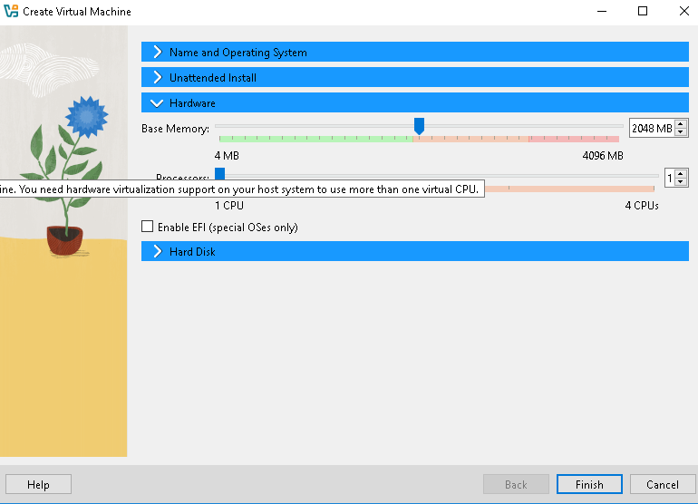

Unduh File ISO Kubuntu
- Buka situs resmi di Kubuntu dan unduh file ISO versi Kubuntu yang diinginkan.
Install Virtual Box
- Pastikan VirtualBox sudah terpasang di komputer Anda. Jika belum, Anda bisa mengunduhnya dari Virtual box
Langkah-langkah Instalasi Kubuntu di Virtual Box
1. Buat Mesin Virtual Baru:
- Buka VirtualBox dan klik tombol New (Baru).
- Beri nama mesin virtual karena saya sudah instal, misalnya “Kubuntu2”.
- Pilih folder yang mau diinstal
- Pilih file ISO yang tadi di download
- Pilih Type sebagai Linux dan Version sebagai Ubuntu (64-bit).
Langkah Alokasikan RAM
- Alokasikan jumlah RAM untuk mesin virtual. Saya memilih 2 GB (2048 MB) untuk Kubuntu tidak harus sama 2 GB sesuaikan dengan komputer atau laptop penyimpanan anda.
Langkah Buat Hardisk Virtual
- Pilih Create a virtual hard disk now (Buat hard disk virtual sekarang) dan klik Create (Buat).
- Pilih VDI (VirtualBox Disk Image) sebagai format hard disk virtual.
- Pilih Ukuran sesuai kebutuhan, misalnya 25,00gb
- Lalu klik Finish
Langkah Start Running (Mulai)
- Kembali ke halaman utama VirtualBox dan klik Start (Mulai) untuk menjalankan mesin virtual.
- VirtualBox akan mem-boot dari file ISO Kubuntu dan menampilkan menu instalasi Kubuntu.
Langkah Instalasi Kubuntu
- Ketika sudah menampilkan menu instalasi, Pilih bahasa anda dan internet connection, Lalu pilih install Kubuntu
- Klik next aja, Pilih zona dan wilayah
- Lalu pilih keyboard model
- Setelah itu kita disuruh milih mau install yang mana sesuai keinginan, karena buat praktek saya pilih minimal instalasion
- Ini adalah menu opsional kalau mau aman silahkan kasih password
- Terakhir langsung install
- Kubuntu kini sudah terinstal dan dapat digunakan dalam VirtualBox.
- Anda dapat masuk menggunakan username dan password yang telah dibuat sebelumnya.
. Melanjutkan ke Tampilan